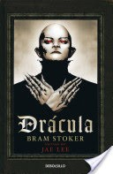

DráculaJonathan Harker viaja a Transilvania para cerrar un negocio inmobiliario con un misterioso conde que acaba de comprar varias propiedades en Londres. Después de un viaje preñado de ominosas señales, Harker es recogido en el Paso de Borgo por un siniestro carruaje que le lleva, acunado por el canto de los lobos, a un castillo en ruinas. Tal es el inquietante principio de una novela magistral que alumbró uno de los mitos más populares y poderosos de todos los tiempos: Drácula. |